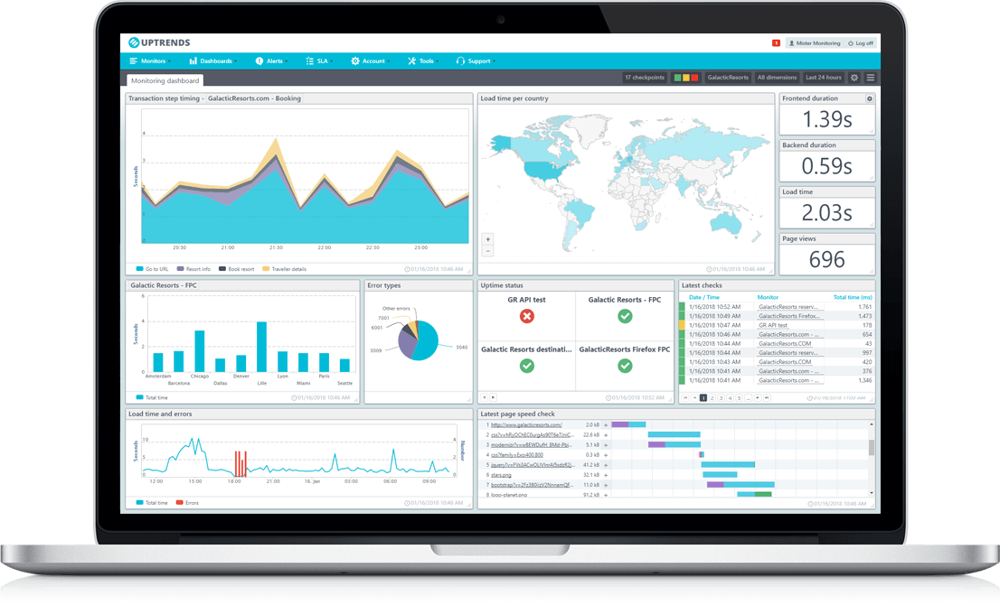
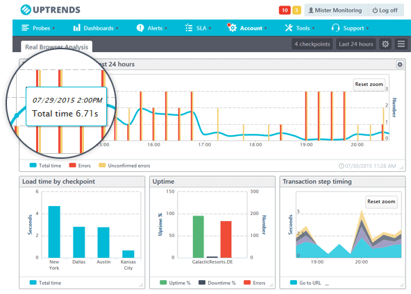
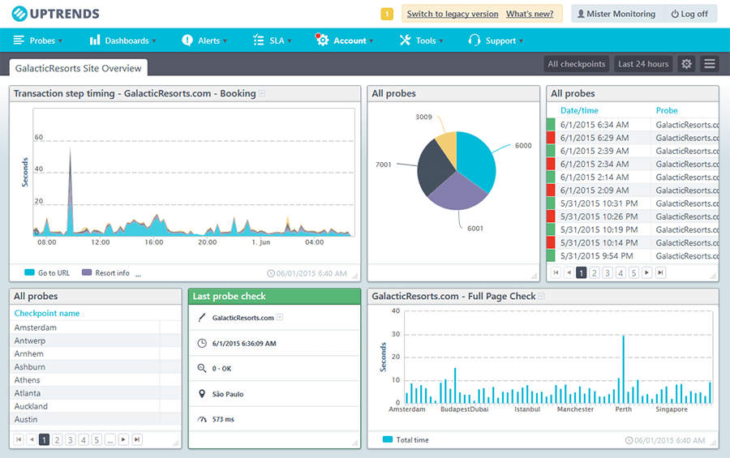

Optimisation Numérique : Élever la Performance et la Fiabilité par une Surveillance Appliquée



Uptrends
Diverses études ont été conduites dans ce domaine pour approfondir notre compréhension de la supervision applicative, des tests de performances et de la surveillance applicative. Cela découle des besoins du département numérique des ministères sociaux, visant à surpasser les services offerts par les solutions de supervision traditionnelles pour objectiver l'expérience utilisateur en matière de disponibilité et de temps de réponse.
La problématique principale consiste à reproduire de manière fidèle le parcours représentatif de l'utilisateur en le simulant. Chaque interaction de l'utilisateur doit fonctionner de manière optimale et répondre aux attentes en termes de temps de réponse.
Pour le projet Uptrend, nous avons entrepris plusieurs étapes afin de garantir une expérience utilisateur rapide et sans erreur dans une approche de boîte noire. Voici le détail des étapes réalisées :
Étude des Solutions Existantes :
▼
Analyse approfondie des différentes solutions disponibles en matière de supervision technique, applicative, et de tests de performance.
Tests sur Deux Solutions Identifiées :
▼
Sélection de deux solutions potentielles après l'étude.
Réalisation de tests pour évaluer leur performance et leur adéquation à nos besoins.
Validation et Atelier de Présentation des Tests :
▼
Validation des résultats des tests effectués.
Organisation d'un atelier de présentation pour partager les conclusions et discuter des avantages de chaque solution.
Identification des Applications Pilotes Éligibles :
▼
Sélection des applications qui serviront de pilotes pour le projet.
Éligibilité basée sur leur représentativité en termes de diversité et de volume d'utilisation.
Lancement du Dispositif :
▼
Déploiement du dispositif de mesure de disponibilité et de temps de réponse sur les applications pilotes.
Objectif du Pilote :
▼
Mesurer la disponibilité et les temps de réponse conformément aux exigences des applications.
Concevoir et mettre en place des tableaux de bord spécifiques à chaque application et un tableau global pour la Direction du Numérique (DNUM) et au-delà.
Conception et Mise en Place des Processus et de l'Organisation des Signalements d'Incidents :
▼
Élaboration des processus et de l'organisation pour signaler les incidents, en mettant l'accent sur la communication avec l'équipe projet et les exploitants.
Préparation à l'Industrialisation :
▼
Élaboration des processus et de l'organisation pour signaler les incidents, en mettant l'accent sur la communication avec l'équipe projet et les exploitants.